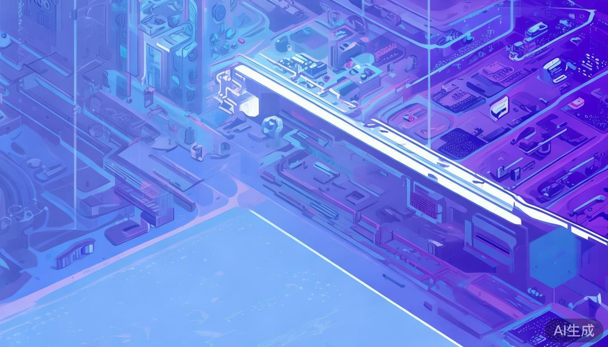

本周 AI 大事记 · 2026年8月第5周
8月25日-8月31日：OpenAI 发布 GPT-5o 与 GPT-5.1 mini（API 成本降 60%），Meta 开源 1.2 万亿参数 Llama 4，字节豆包 4.5 开放千万 token 窗口，Canva 连推三波智能体套件，IDC 数据指向推理算力需求同比翻倍——全模态、端侧、低成本三条路线并行，开源生态与 To B 工作流重构是本周围绕的三条主线。
基础模型发布动态
本周头部厂商集中发布新一代基础模型，覆盖旗舰多模态、轻量低成本、长上下文、端侧部署多个技术方向，产品落地节奏明显加快。
OpenAI正式发布GPT-5o多模态模型：8月30日OpenAI在旧金山秋季技术发布会上推出GPT-5o多模态基础模型，官方实测数据显示其长文本推理、图文跨模态生成、代码编写精度较GPT-4o提升37%，同步面向ChatGPT Plus、企业API用户开放使用，个人专业版订阅价格维持不变。来源：OpenAI官方博客
OpenAI推出GPT-5.1 mini轻量版模型：8月28日OpenAI发布GPT-5.1 mini轻量大语言模型，上下文窗口支持128k tokens，在代码生成、多模态理解任务上对齐GPT-5基础版92%的性能，输入侧API定价为每百万tokens0.1美元，输出侧为0.4美元，调用成本较前代降低60%，即日起面向所有开发者开放调用。来源：OpenAI官方博客
字节跳动发布豆包4.5多模态大模型：8月25日字节跳动在2026火山引擎AI创新巡展北京站正式发布豆包4.5多模态大模型，上下文窗口提升至1000万token，支持超长文档解析、全模态创作，官方称推理性能较豆包4.0提升47%，同步开放API接口供企业开发者调用。来源：字节跳动官方发布会
OpenAI发布Omni-Agent智能体支持实时视频交互：8月31日OpenAI发布代号为“Omni-Agent”的新一代智能体助手，支持实时视频流分析与语音交互，聚焦复杂任务规划场景，产品已集成至iOS与Android系统，标志着AI助手向全模态交互迈进。来源：TechCrunch / OpenAI官方
开源生态进展

本周开源阵营动作频繁，覆盖万亿参数旗舰模型、端侧小模型、智能体编排工具多个层级，进一步降低企业与开发者的AI应用门槛。
Meta开源1.2万亿参数Llama 4模型：8月31日Meta宣布开源Llama 4模型，参数量达1.2万亿，官方声称其长文本处理和代码生成能力超越GPT-5，引发开发者社区广泛热议，此举旨在降低企业级应用门槛，推动AI产业生态繁荣。来源：The Verge / Meta AI
Meta开源Llama 3.2端侧小模型：8月26日Meta在开源社区上线Llama 3.2 1B、3B两款轻量化端侧模型的Apache 2.0开源版本，模型经创作场景专项微调，支持本地离线运行文本生成、图片描述生成、短视频脚本撰写等功能，最低可在4GB内存的移动端设备上流畅运行，相关权重已同步上传Hugging Face平台开放下载。来源：Meta AI官方博客
Hugging Face发布AgentFlow 1.0正式版：8月29日Hugging Face正式推出开源智能体编排工具AgentFlow 1.0版本，支持多模型调度、可视化工作流搭建、工具调用审计等企业级功能，兼容主流开源大模型与第三方API，开发者可在本地或私有云部署，大幅降低企业定制AI工作流的开发门槛。来源：Hugging Face
企业级产品与市场数据
本周企业级AI应用从单点生成工具向全链路智能体套件升级，同时IDC发布的上半年市场报告显示国内AI公有云赛道保持高速增长。
企业产品动态
Canva本周连续发布AI创作相关更新，完成从单点功能到智能体套件的产品升级：
- Canva推出AI设计智能体套件：8月26日Canva在全球创作者峰会上发布Canva AI Agents套件，包含素材生成、品牌合规校验、多平台适配排版3类专用智能体，支持用户输入自然语言需求后自动完成海报、短视频、公众号配图的全链路制作，企业版用户即日起开放试用，个人版功能将于9月中旬上线。来源：Canva官方新闻中心
- Canva发布AI套件秋季更新：8月28日Canva在年度创作者大会上推出AI创作工具套件秋季更新，上线品牌智能体功能，可自动对齐企业VI规范生成海报、短视频脚本、营销文案，支持团队多人协同校验内容合规性，该功能将于9月中旬面向Canva企业版用户全量开放，个人用户可申请内测。来源：Canva产品发布会
- Canva上线国内企业级AI创作工具套件：8月30日Canva面向国内企业用户发布全新AI创作工具套件，覆盖营销海报生成、短视频脚本制作、电商详情页批量产出等12类高频办公场景，支持接入企业私有素材库训练专属生成模型，官方称可帮助内容团队平均降低62%的重复设计工作量。来源：36氪
市场跟踪数据
IDC本周先后披露2026年上半年中国AI公有云服务市场核心数据，行业增长韧性凸显：
- 8月25日发布的报告显示，2026年上半年中国AI公有云服务整体市场规模达217.6亿元，其中生成式AI相关服务收入同比增长128.3%，AI开发工具、智能体搭建服务占比提升至38.2%。来源：IDC中国
- 8月29日发布的跟踪数据显示，2026年上半年中国AI公有云服务市场规模同比增长42.7%，其中MaaS服务占比首次突破48%，生成式AI推理算力需求同比上涨112%，互联网、金融、制造业为前三大采购行业。来源：IDC中国
本周观察
从本周的产品与市场动态可以看到三个明确的行业信号：第一，大模型厂商的产品分层策略已经清晰，旗舰模型追求性能上限、轻量模型压低调用成本、端侧模型保障离线隐私，全参数矩阵覆盖不同场景需求，GPT-5.1 mini将API成本打至前代的40%，将直接推动大规模推理应用的商业化落地；第二，开源生态正在形成“万亿参数云端模型+十亿级端侧模型+智能体编排工具”的完整栈，Meta与Hugging Face的组合持续降低企业定制AI的技术门槛，闭源厂商的性能优势正在被开源生态的灵活性抵消；第三，企业级AI应用已经跨过“单点生成工具”的阶段，Canva连续推出覆盖全流程的智能体套件，叠加IDC数据中智能体搭建服务占比提升、推理算力需求翻倍，说明AI正在从辅助创作工具进化为可自主完成工作流的生产节点，To B赛道的落地重心已经从模型采购转向场景化工作流重构。
本周收录新闻源（共 12 条）
- 2026-08-31 · OpenAI 发布 Omni-Agent 智能体，支持实时视频交互 — TechCrunch / OpenAI 官方
- 2026-08-31 · Meta 开源 Llama 4 模型，参数规模突破 1.2 万亿 — The Verge / Meta AI
- 2026-08-30 · OpenAI正式发布GPT-5o多模态模型，推理与生成精度较前代提升37% — OpenAI官方博客
- 2026-08-30 · Canva上线企业级AI创作工具套件，内置12类垂直场景AIGC工作流 — 36氪
- 2026-08-29 · IDC发布2026年上半年中国AI公有云服务市场跟踪报告 — IDC中国
- 2026-08-29 · Hugging Face上线企业级开源智能体工作流编排工具AgentFlow 1.0正式版 — Hugging Face
- 2026-08-28 · OpenAI推出GPT-5.1 mini轻量版模型，API调用成本较前代降低60% — OpenAI官方博客
- 2026-08-28 · Canva发布AI创作工具套件2026秋季更新，新增企业级品牌智能体功能 — Canva产品发布会
- 2026-08-26 · Canva推出AI设计智能体套件，覆盖从素材生成到多平台排版全流程 — Canva官方新闻中心
- 2026-08-26 · Meta发布Llama 3.2 1B/3B端侧小模型开源版本，支持本地离线创作调用 — Meta AI官方博客
- 2026-08-25 · 字节跳动正式发布豆包4.5多模态大模型，长上下文窗口提升至1000万token — 字节跳动官方发布会
- 2026-08-25 · IDC发布2026年上半年中国AI公有云服务市场报告，生成式AI服务同比增长128.3% — IDC中国
下周一分钟行动清单
- 试新模型：GPT-5.1 mini 官方 API 成本降 60%，把日常代码/文案任务切到 mini 档，月账单可省一半
- 关注端侧：Llama 3.2 1B/3B 已开源，本地电脑可离线跑创作工具，体验一次离线工作流
- 查预算：豆包 4.5 长上下文到 1000 万 token，涉及长文档/长视频总结的活儿优先切过去
- 验证报告：IDC 显示生成式 AI 服务同比增 128.3%，与你所在行业对比，看自己是否在增量赛道
出处声明
本文由 AI（智谱 GLM / 豆包 / DeepSeek）依据 data/news.js 中收录的公开资讯聚合整理，所有新闻均标注原始来源，内容以官方发布为准。本站不对因使用本文产生的决策后果负责。